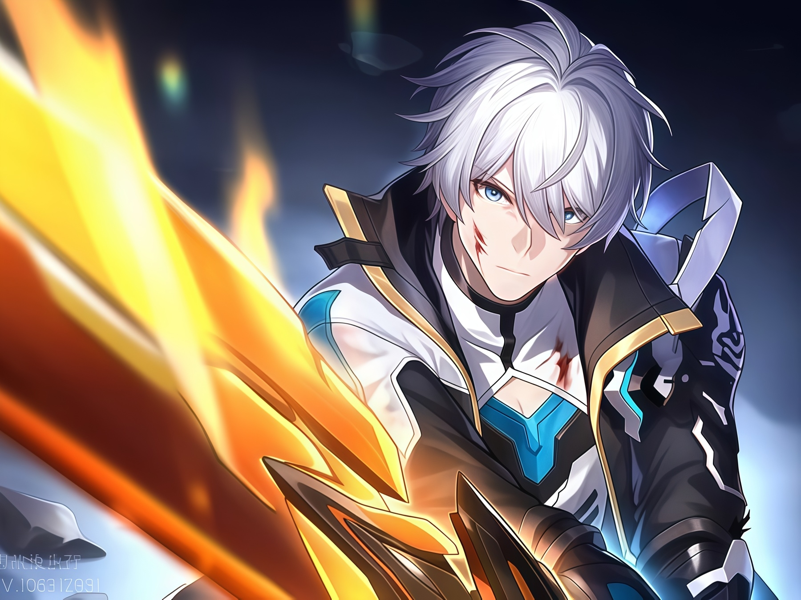

Usia Biologis~50.000+ Tahun (Stasis Cryo & MANTIS)
Origin & Faction
Era AsalPrevious Era (Peradaban Purba 50.000 Tahun Lalu)
Afiliasi UtamaFire Moth (Dulu) • World Serpent (Pendiri & Pemimpin)
Kelompok EliteThirteen Flame-Chasers (Peringkat #1)
Combat, Gear & Genetics
Jenis SenjataGreatsword, Divine Key (Judgment of Shamash / Might of An-Utu)
Modifikasi GenetikMANTIS (Gabungan DNA Honkai Beast: Parvati & Brahma)
Suhu Tubuh-30°C (Suhu Mutlak Pembeku)
Pengisi Suara (CV)Atsushi Imaruoka (Jepang) / Hans (Mandarin)

Kevin Kaslana mengaktifkan wujud kekuatan penuh bersama Might of An-Utu
"Mengapa burung terbang? Karena mereka harus terbang menuju langit—bahkan jika sayap mereka terbakar menjadi abu oleh matahari."
Kevin Kaslana memegang posisi sebagai salah satu karakter paling monumental, kompleks, tragis, dan berkuasa mutlak dalam keseluruhan narasi semesta Honkai Impact 3rd. Berasal dari Previous Era—sebuah peradaban manusia maju yang musnah akibat bencana kosmik Honkai 50.000 tahun silam—Kevin adalah figur yang menderita beban paling berat di pundaknya. Sebagai manusia pertama yang berhasil selamat dari kehancuran total eranya, ia mendedikasikan puluhan ribu tahun hidupnya untuk satu tujuan absolut: memastikan kelangsungan hidup umat manusia di Era Saat Ini (Current Era), apa pun taruhannya, betapapun kejam metode yang harus ia tempuh.
1. Transisi Tragis: Dari Remaja Biasa Menjadi Simbol Kematian
⌃
Sebelum dunia runtuh di bawah teror Herrscher, Kevin menjalani kehidupan masa muda yang relatif normal dan penuh warna. Ia adalah seorang atlet basket berbakat di Akademi Chiba, memiliki kepribadian yang ceria, mudah bergaul, serta sangat dikagumi banyak orang. Namun, takdir hidupnya berubah secara total ketika bencana Honkai pertama kali merenggut kedamaian dunia.
Didorong oleh tekad untuk melindungi cinta pertamanya, seorang ilmuwan jenius bernama Dr. MEI, Kevin bergabung dengan organisasi militer elit anti-Honkai bernama Fire Moth. Di medan perang yang penuh darah dan keputusasaan, Kevin menyaksikan seluruh rekan seperjuangannya gugur satu per satu. Pengalaman traumatis ini perlahan mengikis sisi emosional remajanya, mengubahnya menjadi sosok prajurit dingin, tanpa kompromi, dan memikul beban moral yang menghancurkan jiwanya sendiri.
2. Operasi MANTIS dan Kutukan Suhu Beku -30°C
⌃
Dalam upaya putus asa untuk mempersempit jurang kekuatan antara manusia dan para monster Honkai, Fire Moth mengembangkan eksperimen biologis radikal yang disebut Proyek MANTIS (Massive Augment-ƙ Foundation). Kevin sukarela menjalani operasi penyuntikan genetik dengan sel dari Honkai Beast kelas Emperor, yaitu Parvati.
Eksperimen tersebut berhasil memberinya kekuatan fisik yang melampaui batas makhluk hidup normal, namun dengan bayaran yang sangat mahal. Suhu tubuh alami Kevin merosot drastis hingga mencapai -30°C. Akibat kutukan biologis ini, ia tidak akan pernah bisa merasakan hangatnya sentuhan manusia lagi. Udara di sekitarnya membeku secara konstan, benda-benda hancur berkeping-keping jika disentuhnya secara langsung, dan ia dipaksa hidup dalam pengasingan termal yang abadi, terisolasi dari kehangatan dunia yang mati-matian ia lindungi.
3. Pendirian Organisasi World Serpent & Rencana Jangka Panjang
⌃
Setelah Previous Era dinyatakan kalah total melawan Herrscher of the End, Kevin bersama beberapa penyintas memilih jalan tidur panjang dalam kapsul stasis cryo. Ketika terbangun di Era Saat Ini, ia mendirikan faksi bayangan global bernama World Serpent (Serikat Ular Dunia).
Selama ribuan tahun beroperasi dari balik layar, Kevin merancang dan mengeksekusi rencana kontroversial bernama Project STIGMA. Rencana ini bertujuan untuk menyebarkan stigmata buatan ke seluruh umat manusia guna memaksa mereka beradaptasi dan kebal terhadap energi Honkai secara paksa—meskipun proses tersebut berisiko mengorbankan sebagian besar populasi bumi. Bagi Kevin, moralitas individu tidak ada artinya jika dibandingkan dengan kelangsungan hidup spesies manusia secara keseluruhan.
4. Klimaks Pertarungan di Bulan & Warisan Klan Kaslana
⌃
Puncak perjalanan hidup Kevin terjadi dalam konfrontasi kolosal di permukaan Bulan, di mana ia bertindak sebagai bos terakhir bagi generasi protagonis modern. Menggabungkan kekuatan aslinya dengan otoritas Finality dan wujud pamungkas Deliverance, Kevin bertarung melawan aliansi terkuat Era Saat Ini yang dipimpin oleh keturunannya sendiri, Kiana Kaslana, bersama Raiden Mei dan Bronya Zaychik.
Dalam pertempuran sengit tersebut, Kevin tidak hanya menguji kekuatan fisik mereka, melainkan menguji tekad moral peradaban baru. Setelah dikalahkan, ia tersenyum lega, menyadari bahwa generasi penerus telah menemukan jalan yang jauh lebih manusiawi dan benar untuk melangkah ke masa depan tanpa harus mengorbankan esensi kemanusiaan itu sendiri.
Ensiklopedia 8 Fakta Mendalam Kevin Kaslana
1. Dari Remaja Basket Riang Menjadi Prajurit Tanpa Senyum
Banyak penggemar baru terkejut saat mengetahui bahwa Kevin Kaslana di masa mudanya adalah sosok yang sangat ramah, hangat, dan bersemangat tinggi. Sebelum dunia hancur lebur, ia adalah bintang lapangan basket di Akademi Chiba dan memiliki kehidupan sosial yang sangat aktif. Transformasi mentalnya menjadi pria dingin tanpa ekspresi adalah hasil dari akumulasi rasa bersalah yang luar biasa, menyaksikan kematian ribuan kawan seperjuangan, serta tekanan psikologis luar biasa sebagai ujung tombak pertahanan umat manusia.
2. Tragedi Abadi: Tidak Bisa Memeluk Dr. MEI Maupun Keturunannya
Sisi paling menyayat hati dari karakter Kevin adalah kutukan suhu tubuh -30°C akibat gen Parvati. Setelah operasi MANTIS, ia tidak pernah bisa bersentuhan fisik dengan siapa pun tanpa membekukan mereka seketika. Ketika Dr. MEI—cinta sejati sekaligus wanita paling berharga dalam hidupnya—berada di ambang kematian akibat paparan radiasi Honkai, Kevin hanya mampu menatap wanita tercintanya dari balik dinding kaca steril, tidak mampu menggenggam tangannya untuk terakhir kali demi memberikan kehangatan perpisahan.
3. Kebiasaan Unik Mengonsumsi Mie Instan Beku
Sebuah lore kecil namun ikonik yang sering dibahas dalam komunitas adalah kesukaan Kevin terhadap mie instan cup. Karena suhu tubuhnya yang sangat dingin langsung membekukan air panas dalam hitungan detik, Kevin tidak pernah bisa menyeduh mie instan dengan air panas normal. Ia terbiasa memakan mie instan tersebut dalam kondisi dingin membeku. Kebiasaan kecil ini menjadi metafora melankolis tentang bagaimana ia tetap mempertahankan sisa-sisa memori masa remajanya di tengah kesunyian ribuan tahun.
4. Leluhur Genetik Seluruh Anggota Klan Kaslana
Keluarga Kaslana di Era Saat Ini—termasuk tokoh-tokoh terkemuka seperti Kallen Kaslana, Siegfried Kaslana, Durandal (Bianka Ataegina), hingga sang protagonis utama Kiana Kaslana—merupakan keturunan tak langsung atau mewarisi garis darah modifikasi dari Kevin. Ketahanan fisik yang luar biasa, refleks super, serta kemampuan mengendalikan kekuatan Honkai yang menjadi ciri khas klan Kaslana sebenarnya berasal dari rekayasa genetik MANTIS yang diwariskan secara turun-temurun sejak masa lalu.
5. Tradisi Turun-Temurun Penggunaan Tangan Kiri (Kidal)
Dalam pertarungan, Kevin konsisten menggunakan tangan kirinya sebagai tangan dominan untuk memegang senjata dan melancarkan serangan presisi. Kebiasaan bertarung ini ternyata diturunkan secara genetik maupun kultural kepada garis keturunan klan Kaslana di masa depan. Kiana Kaslana juga menunjukkan kecenderungan dominan menggunakan tangan kiri saat menggunakan senjata api ganda atau pedang, menjadikannya ciri khas keluarga yang diwariskan langsung oleh sang leluhur pendiri.
6. Pemilik Peringkat #1 Flame-Chasers yang Tak Tertandingi
Di antara 13 anggota Thirteen Flame-Chasers—kelompok pahlawan terkuat dari Previous Era yang mencakup individu-individu dengan kemampuan luar biasa seperti Aponia, Elysia, Eden, dan Mobius—Kevin menduduki peringkat pertama secara mutlak. Ukiran tanda MANTIS miliknya merepresentasikan konsep Deliverance (Pembebasan), menjadikannya kekuatan pemusnah paling ditakuti sekaligus benteng pertahanan terakhir peradaban purba.
7. Satu-Satunya Manusia yang Mampu Menjinakkan Judgment of Shamash
Judgment of Shamash adalah Divine Key terkuat dan paling mematikan yang terbuat dari Core of the Herrscher of Death dan Herrscher of Fire. Senjata ini memiliki kemampuan membakar penggunanya sendiri menjadi abu akibat suhu panas kosmik yang ekstrem. Namun, karena tubuh Kevin sendiri berada di titik nol (-30°C), ia adalah satu-satunya manusia sepanjang sejarah yang mampu mengayunkan wujud pamungkas senjata ini (Might of An-Utu) tanpa terbakar tewas oleh apinya sendiri.
8. Antagonis yang Rela Menanggung Dosa Demi Masa Depan
Kevin tidak pernah melihat dirinya sebagai pahlawan di Era Saat Ini; ia sadar bahwa metode Project STIGMA yang digunakannya akan mendatangkan kebencian, perlawanan, dan cap penjahat nomor satu di dunia. Namun, ia dengan sukarela merelakan jiwanya dikutuk sebagai monster dan musuh bersama umat manusia. Bagi Kevin, jika kehormatannya harus hancur lebur demi memastikan umat manusia memiliki kesempatan hidup di masa depan, maka ia akan memikul beban dosa tersebut sampai napas terakhirnya.
Koleksi Kutipan Ikonik Kevin Kaslana
"Tidak peduli berapa kali dunia ini hancur berkeping-keping, umat manusia akan selalu menemukan cara untuk bangkit kembali dari abu. Jika tidak ada jalan yang tersisa di depan, maka aku sendiri yang akan merobek takdir itu dengan pedang ini."
"Keberanian sejati bukanlah ketiadaan rasa takut di dalam dada, melainkan keputusan sadar bahwa ada sesuatu yang jauh lebih berharga untuk dilindungi daripada nyawa kita sendiri."
"Api ini membakar habis segalanya tanpa ampun, namun di dalam es yang membekukan sekujur jiwaku, janji suci kepada masa depan tidak akan pernah padam oleh waktu."
"Dulu aku percaya bahwa melindungi dunia berarti menyelamatkan setiap jiwa di dalamnya. Sekarang aku mengerti... terkadang, seseorang harus rela menjadi monster agar yang lain bisa hidup sebagai manusia."